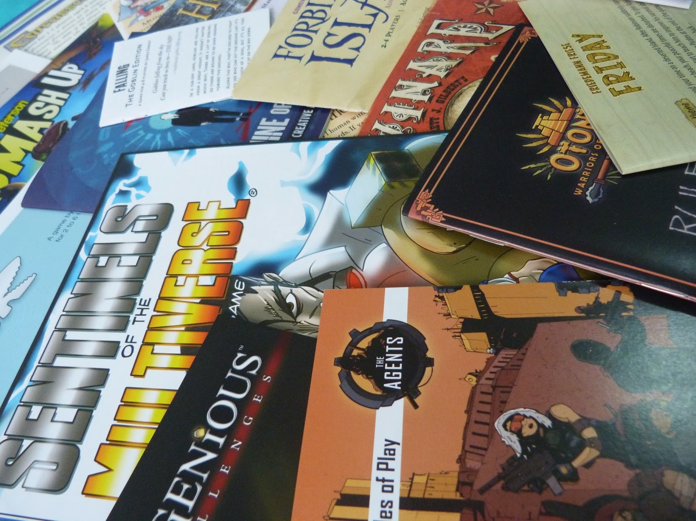
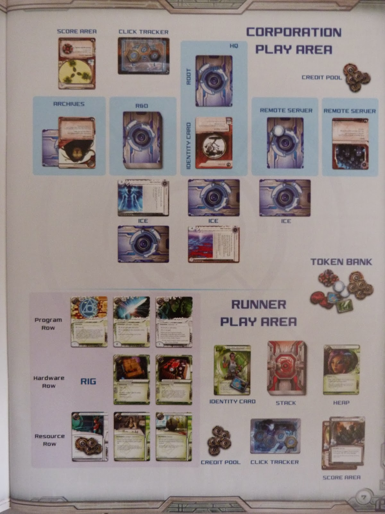
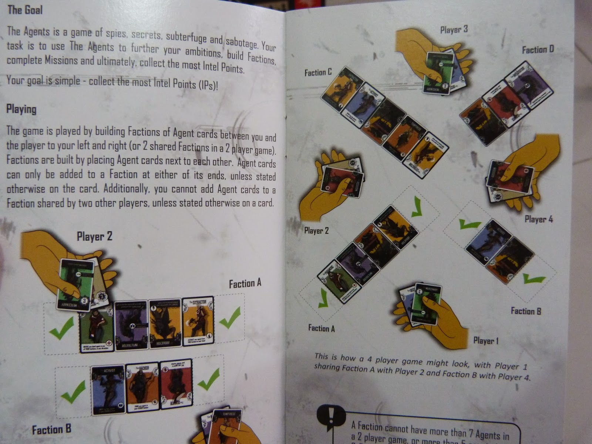
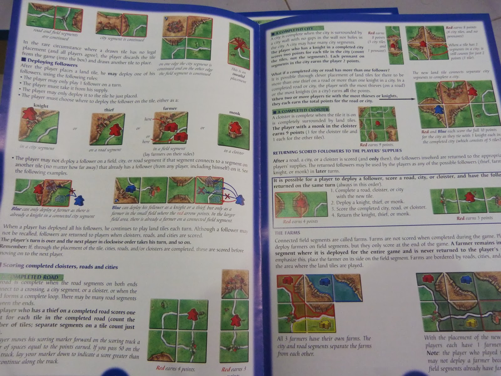
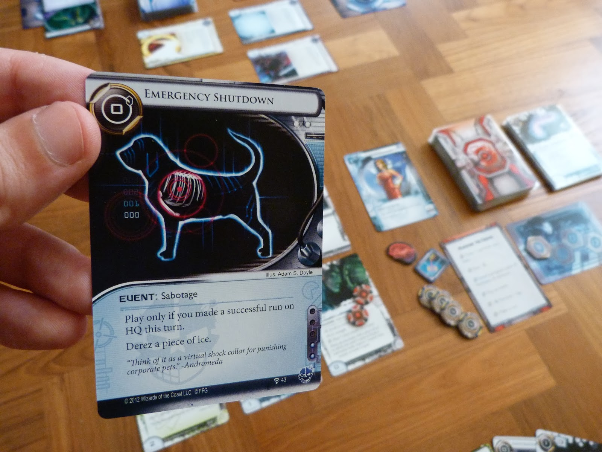
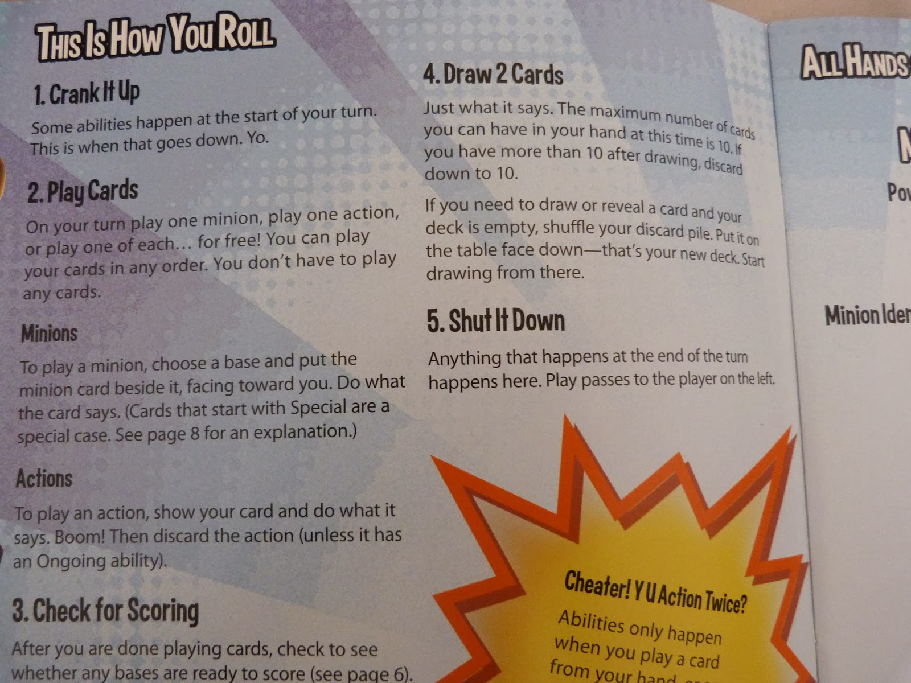
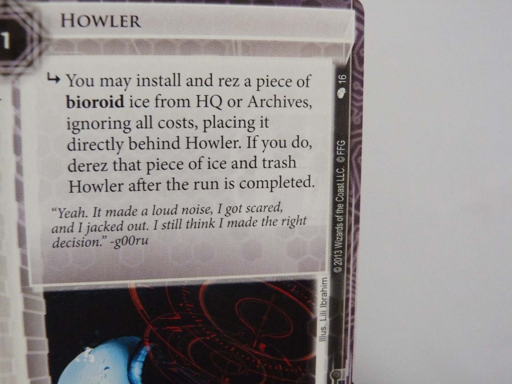
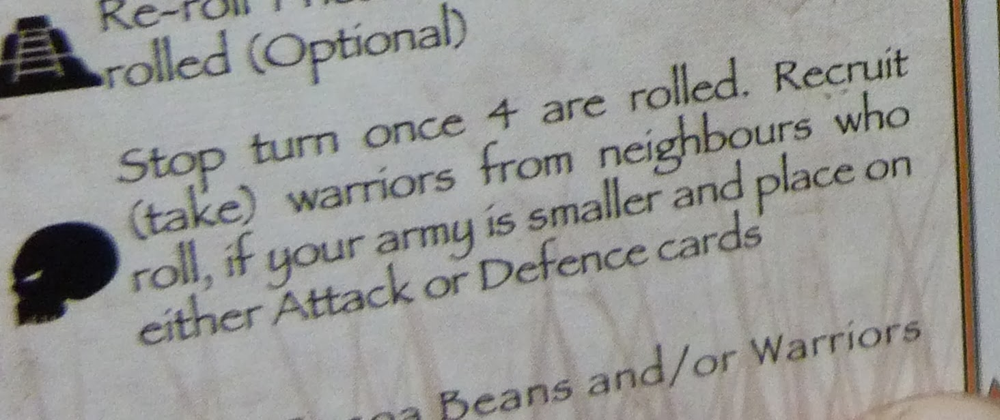

Writing Tabletop Rule Books
Clear instructions can make or break your game. No matter how fun and clever your game is, if players can't figure out how to play it, then they're gonna have trouble enjoying it.
Bear in mind that the first play of a game is often the most important play, and that a poor set of rules can turn that experience into a dull and confusing mess, rather than the exciting discovery that it should be. This means that your instructions need to be awesome.
This article is broken into two sections: Content and Language.
Content
When it comes to the content of your rule-book, one key rule is to simplify as much as possible. Even the smartest player can become overwhelmed with new information, so important information needs to be clear and paramount, with specifics and details that are needed less frequently being resigned to an appropriate section, for when they're needed.
The process of simplifying rules begins with the game itself, not the rulebook. If you find that your game needs a lot of side-rules to cover weird situations, then maybe look at the overall design and see if it's suffering from feature bloat or an inelegant mechanic.
With this central rule in mind, lets look at some of the information we need to immediately convey to the reader.
"Who am I and what am I trying to do?"
This is always the first question I ask when I'm learning a game and I think it's one of the first things a manual should address. Essentially, we are telling the player what their role is and what the victory conditions are. Once a player understands the purpose of the game, subsequent rules should become part of a larger structure, and thus, more memorable.
If your game is not thematic, then the victory conditions should at least be clear.
If the victory conditions are somewhat difficult to define (for example, if they are based upon victory points that can be acquired in a variety of ways), you can still provide some direction. Agricola is an example of this - it's rule-book should state that though there are many ways to victory, players are still trying to develop the most successful farm.
Do not Assume the Player Understands Common Mechanisms
You've played hundreds of deckbuilders, I'm sure, but potential players may have no understanding of them, so if you use their mechanics you must explain them. This goes for any mechanic. Worker placement games should not assume players know what a worker is. Trick-taking games should not assume players know what a trick is. You'll need to explain these mechanics if they are in your game.
Describe Components
Use an early section of your rulebook to name the components used in the game. This could be as simple as a list. Once you've said that the meeples are "assistants", you are helping to convey the theme and making the rules easier to digest later on.
Make Prolific Use of Diagrams
A picture says a thousand words, and this is certainly true of board game instructions. Particularly when addressing issues such as setup and card elements, diagrams and illustrations are invaluable. Humans are visual creatures and able to digest far more information when it's presented in a visual form. Similarly, charts and tables are great visual tools for conveying information quickly and concisely.
Netrunner can be incredibly difficult to understand for new players. Fortunately, the rule-book has some excellent diagrams and illustrations.
The Agents makes great use of illustration to show examples of the game in play for two, three and four players.
Carcassone's rule-book is fantastic. Every element is clearly illustrated to make things as easy as possible.
Save Card Anatomy Until it is Relevant
At some point, you should describe the anatomy of the cards and boards in the game (if any), probably with a labelled illustration. The problem with card anatomy is that it can be a lot for players to digest if they do not have enough context of the game. Consider addressing card anatomy later in the rulebook, when it is relevant to the mechanics described.
Resign Uncommon Rules to the Cards Themselves
If your game makes use of cards, remind yourself that you have a large chunk of real estate right there. Rules that are not part of the core mechanics and only take effect when a specific card is played could well be resigned to that card (and perhaps a reference section of the rulebook, if needed).
Similarly, cards and components should have a suggestion of their use in their design. For instance, if a token is meant to be played on a space on the board, then the space on the board should reflect the same shape or colour as the token.
Additional complexities resigned to specific cards. Pretty much a no-brainer in a massive game like Netrunner.
Provide Prompt Cards
Individual player prompt cards are useful for several reasons:
- They make sure players don't miss or forget key points.
- They allow the game to flow with greater ease during those first few plays.
- They allow new players to remain competitive by not giving away their future moves. I've been in the situation many times where I've hurt my chances of victory by asking for clarification on a rule, effectively letting other players know my nefarious plans.
Outline Steps/Phases
On the prompt cards and in an appendix, let your players know the phases of a turn in the clearest fashion possible. Flow charts and other diagrams are a great help here.
Smash Up's rulebook has a very simple outline of everything you can do during a turn.
Reset the Product
If your game comes with multiple card decks or player specific components, make it clear how to group these components and cards back together in case of a catastrophic mix-up. It's as simple as, if there is a "Chance" deck and a "Community Chest" deck that must be kept separate, say so, and explain how cards from each deck can be individually identified. It's as easy as saying, "The chance cards have 'Chance' written on the back." Don't just assume we can figure it out.
Language
Consistent use of Lingo
Lingo means words associated with a specific (usually technical) topic and boardgaming is full of it. Whilst some lingo can safely be considered as assumed knowledge ("hand", "deck", "board", "token") anything too specific should be explained. Words and phrases like, "mulligan", "draft cards", and "place worker", may as well be an alien language to inexperienced boardgamers. Use lingo with care.
You may also use lingo which is specific to your game alone. This is usually fine if it enhances the theme (Netrunner, for instance, renames the draw pile, hand and discard pile, purely for thematic reasons), but if you do so, make the reference very clear when you first introduce the lingo and then stick to your guns. Don't call something a "scientist" in one paragraph and then simply a "worker token" in the next. Doing so leaves too much room for confusion.
Use of Prepositions
While this is not a particularly common problem, getting prepositions wrong can really wreak havoc on your game. A preposition is a word that indicates the position of something. So any game that requires, for example, cards to be placed in specific positions must make its language clear.
To elaborate on my example, if I say "place your monster card above your dungeon card", do I mean place the monster card in the same location, covering the dungeon card, or do I mean place the monster card in an empty space on the table along the top-edge of the dungeon card? There's a significant degree of ambiguity there, which should be cleared up.
And positions of cards sometimes change depending on where players are sitting. In Netrunner, two players sit opposite each other. One particularly tricky card indicates making changes in the space before that card. Another indicates changing the space after it. Of course, both players have different views on what "before" and "after" mean when they are looking at the row of cards from different directions. If prepositions become too difficult, it would be an excellent opportunity to use a diagram to help explain.
In relation to prepositional errors is a small comment on style. Avoid saying something like, "the token on the right-hand side" - your hand probably has nothing to do with it. Instead, say "the token on the right." I once heard Arnold Schwarzenegger refer to his "right-hand leg". It's not so much a point of confusion - more just an example of bad style.
"Directly behind Howler" is too vague.
Use of Pronouns
A pronoun is a word you use in place of a noun. With people, you may replace their name with "he", "she", "you", "they", etc. With a boardgame, you may find yourself referring to a boardgame component as "it" or many components as "them" or "they". For example:
"Rotate the card 90 degrees. It is now out of play"; or
"Place the tokens in a pile, where they can be reached with ease."
Doing this is often fine, but on occasion, it can lead to ambiguity. Take this example:
"Place a token next to the card. It may now be moved to the discard pile."
In this case, there are two possible nouns (token and card) which the pronoun (it) could be referring to. It's not clear whether the card or the token goes to the discard pile, so we should rephrase, substituting the correct noun in place of the pronoun:
"Place a token next to the card. The card may now be moved to the discard pile."
An easy fix and a remarkably common issue. Whenever you see a pronoun, double check how many nouns it could possibly refer to and clarify if needed. This is particularly important when an action affects multiple players in different ways - you need to be very clear in each instance, which player you are referring to.
"In this example, the subject of the second sentence is different from the first. The prepositions and sentence structure obscure this change.
Singular and Plural Verbs
"Is" and "Are" are both verbs. "Is" is singular and "are" is plural. So if you have a singular noun, use the singular verb (The card is discarded) and if you have a plural noun, use the plural verb (The cards are discarded). It may sound dumb, but I've seen this error many times. It often means that players can't be 100% sure if the error is in the noun or the verb, they might assume you meant "cards" instead of "card", discard their hand and royally screw up the game.
The Dice/Die/Dices Conundrum
Whilst were talking about plurals, lets look at the word "dice". Technically, the singular form is "die" and the plural form is "dice". "Die" is occasionally considered archaic and unwieldy, but should really be used for the sake of clarity. If you choose to always use "dice" exclusively, be sure to clarify the number with adjectives and determiners:
- A dice
- The dice
- One dice
- A pair of dice
- Two dice
As for "dices" - that's something you do with vegetables. Just, no.
Icons Must be Clear
Icons can be a great tool in games. They may allow the game to be played by non-English speakers and let all players quickly see the purpose of a card. If you use icons in place of words, the instruction that the icon is trying to express must be easy to grasp and be unambiguous.